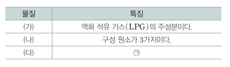

문제:
표는 연료로 사용되는 물질 (가)~(다)에 대한 자료이다. (가)~(다)는 각각 메테인(CH4), 프로페인(C3H8), 에탄올(C2H5OH) 중 하나이다.
[정답 제출시 'A,B'와 같이 해당하는 답 사이에 , 사용 후 띄어쓰기 없이 작성 후 제출해주시길 바랍니다.]
이에 대한 설명으로 옳은 것만을 있는 대로 고르시오.
ㄱ. (가)는 메테인이다.
ㄴ. ‘액화 천연 가스(LNG)의 주성분이다.’는 ㉠으로 적절하다.
ㄷ. 완전 연소 생성물의 가짓수는 (나)>(다)이다.